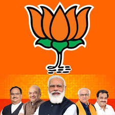

Bharatiya Janata Party
The Bharatiya Janata Party is a political party in India and one of the two major Indian political parties alongside the Indian National Congress.[45] BJP emerged out from Syama Prasad Mukherjee's Bharatiya Jana Sangh.[46] Since 2014, it has been the ruling political party in India under the incumbent Prime Minister Narendra Modi.[47] The BJP is aligned with right-wing politics and has close ideological and organisational links to the Rashtriya Swayamsevak Sangh (RSS), a far-right paramilitary organisation.[48][49] Its policies adhere to Hindutva, a Hindu nationalist ideology.[50][51] As of January 2024, it is the country's biggest political party in terms of representation in the Parliament of India as well as state legislatures.
The party's origins lie in the Bharatiya Jana Sangh, which was founded in 1951 by Indian politician Syama Prasad Mukherjee, after he left Hindu Mahasabha to form a party as the political wing of RSS.[52][53] After the Emergency of 1975–1977, the Jana Sangh merged with several other political parties to form the Janata Party; it defeated the then-incumbent Indian National Congress in the 1977 general election. After three years in power, the Janata Party dissolved in 1980, with the members of the erstwhile Jana Sangh reconvening to form the modern-day BJP. Although initially unsuccessful—winning only two seats in the 1984 general election, it grew in strength on the back of the movement around Ram Janmabhoomi in Uttar Pradesh. Following victories in several state elections and better performances in national elections, the BJP became the largest political party in the Parliament in 1996; however, it lacked a majority in the lower house of Parliament, and its government, under its then-leader Atal Bihari Vajpayee, lasted for only 13 days.[54]
After the 1998 general election, the BJP-led coalition known as the National Democratic Alliance (NDA) under prime minister Vajpayee formed a government that lasted for a year. Following fresh elections, the NDA government—again headed by Vajpayee—lasted for a full term in office; this was the first non-Congress government to do so. In the 2004 general election, the NDA suffered an unexpected defeat, and for the next ten years, the BJP was the principal opposition party. Narendra Modi, then the chief minister of Gujarat, led the party to a landslide victory in the 2014 general election. Modi has since led the NDA government as Indian prime minister, including being re-elected with a sole majority in the 2019 general election and with a coalition in the 2024 general election. As of December 2023, the alliance governs 17 Indian states and union territories.
The official ideology of the BJP is integral humanism, first formulated by Deendayal Upadhyaya in 1965. The party advocates social conservatism and a foreign policy centred on nationalist principles. During its first period in national government, the BJP avoided its Hindu nationalist priorities, and focused on a largely liberal economic policy that prioritised globalisation and economic growth over social welfare.[55] Since returning to government in 2014, the BJP government has enacted several priorities of the RSS, including criminalising the practice of triple talaq, and revoking Article 370 of the Constitution of India (which granted autonomy to Jammu and Kashmir), abrogating its statehood.[56]
The party has frequently spread disinformation and has been condemned by foreign entities for spreading conspiracy theories.[57][58] India has experienced nationwide democratic backsliding under the BJP's rule since 2014